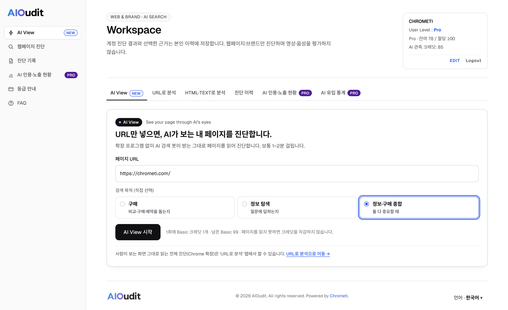
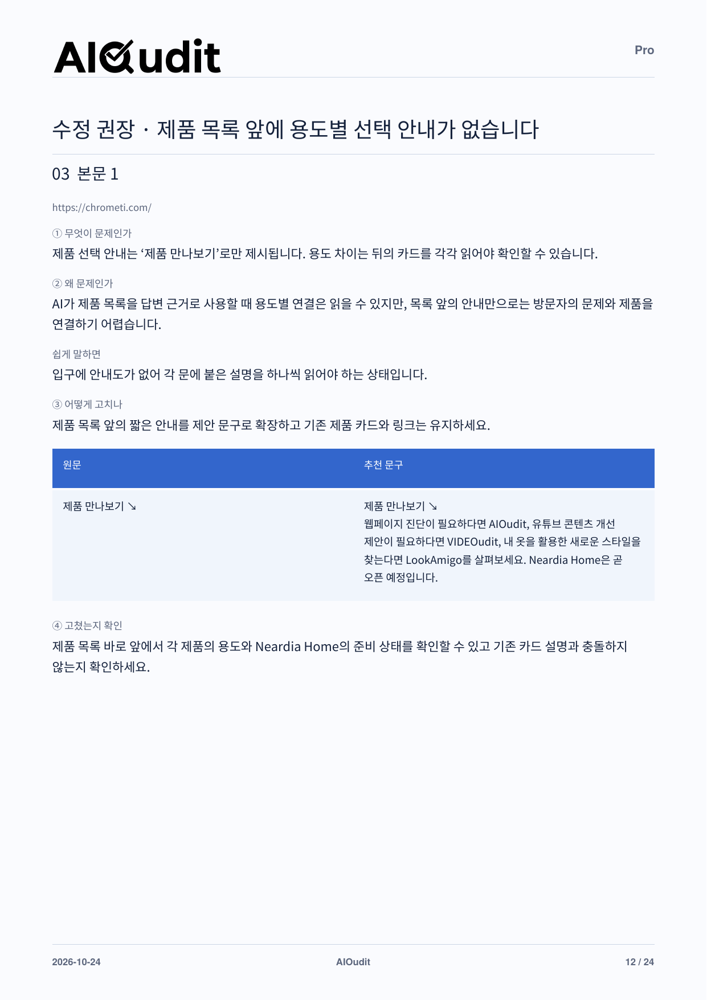
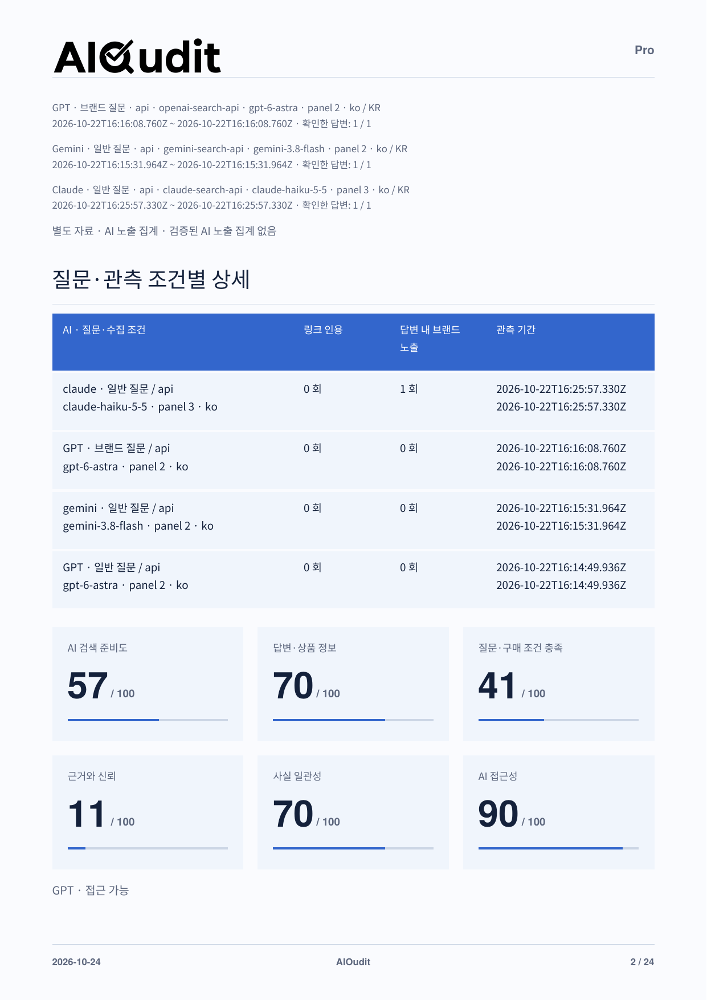
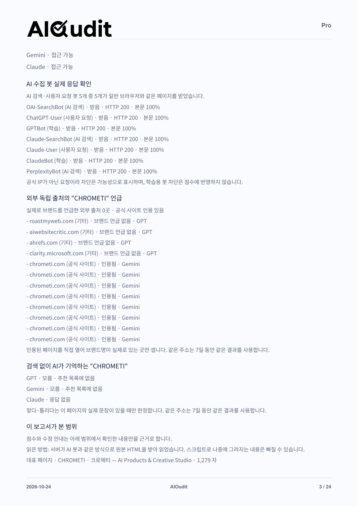
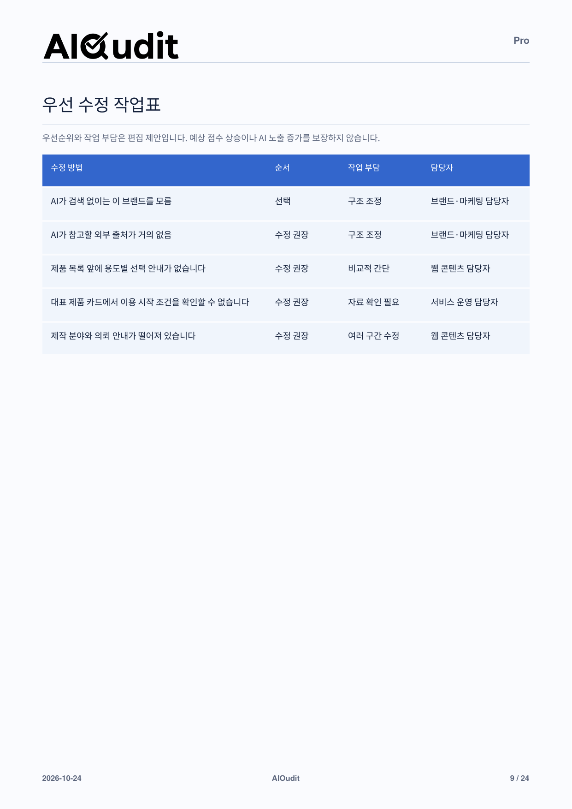

AI SEARCH · FROM INSIGHT TO ACTION
AIOudit
검색에서 발견되고,
선택받는 페이지로.
URL 하나로 AI가 보는 내 페이지를 먼저 확인하고, 필요하면 사람이 보는 화면까지 읽어 정밀하게 진단합니다. AI 봇 접근부터 실제 AI 답변 관측, 바로 고칠 문구까지 한 보고서로 확인하세요.
01 / 웹페이지 진단 화면
검색 목적을 정하고,
페이지를 그대로 읽습니다.
같은 페이지라도 방문자가 구매를 결정하려는지, 정보를 찾으려는지에 따라 필요한 답이 달라집니다. 목적을 고르고 URL을 넣으면 읽기부터 진단까지 이어집니다.
- 01
검색 목적 선택
구매, 정보 탐색, 정보·구매 종합 중에서 직접 고릅니다. 이 기준이 본문 평가와 수정 안내에 반영되며, 수집 내용으로 자동 변경되지 않습니다.
- 02
URL 입력과 페이지 읽기
Chrome 확장이 연결되어 있으면 사람이 보는 화면까지 읽고, 같은 사이트의 공개 안내 페이지도 최대 3개까지 보조로 검토합니다. 확장이 없어도 AI가 받는 서버 화면으로 진단할 수 있습니다.
- 03
창을 닫아도 이어지는 진단
진단은 백그라운드에서 계속되고, 끝나면 알림과 진단 기록에서 결과를 엽니다. 페이지를 읽지 못하면 크레딧은 차감되지 않습니다.

NEW / AI View
URL 하나로,
AI가 보는 내 페이지.
확장 프로그램 없이 AI 검색 봇이 받는 그대로 페이지를 읽어 진단합니다. 보통 1~2분이면 결과를 확인할 수 있습니다.
- 01
URL과 검색 목적만
설치나 원문 붙여넣기 없이 주소와 목적만 정하면 바로 시작합니다.
- 02
AI가 받는 원본 기준
서버가 내려준 원본 HTML을 기준으로 AI가 읽을 수 있는 내용과 놓치는 내용을 나눠 봅니다.
- 03
더 깊게는 URL로 분석
사람이 보는 화면까지 읽는 전체 진단은 ‘URL로 분석’에서 이어서 진행합니다.

운영 중인 서비스 화면(2026년 10월) · 계정 표시는 예시입니다. 화면을 누르면 확대해서 볼 수 있습니다.
02—03 / 결과 확인에서 실행까지
무엇이 부족한지,
어떻게 고칠지까지.
CHROMETI 홈페이지를 Pro로 직접 진단한 실제 보고서입니다. 항목을 골라 점수, 관측 근거, 수정 작업이 어떻게 이어지는지 확인하세요.
PUT IT INTO PRACTICE
원문 옆에,
바로 검토할 수정안.
무엇이 문제인지, 왜 문제인지, 어떻게 고칠지를 차례로 읽고 원문과 추천 문구를 나란히 비교합니다.
- 문제와 이유
- 샘플은 제품 목록 앞에 용도별 선택 안내가 없어 방문자와 AI가 카드를 하나씩 읽어야 하는 점을 짚습니다.
- 쉽게 말하면
- 진단 내용을 한 줄 비유로 풀어 담당자가 바로 이해할 수 있게 합니다.
- 고친 뒤 확인
- 적용 후 무엇을 확인하면 되는지 완료 기준을 함께 제공합니다.
실제 페이지에 적용하기 전, 운영 사실과 문구를 확인하는 편집 제안입니다.
PDF 12쪽에서 보기
실제 Pro 보고서 원본 페이지 · 확대하면 세부 내용을 읽을 수 있습니다.
READ THE DIAGNOSIS
점수보다 중요한 건,
낮은 이유와 다음 행동.
AI 검색 준비도를 답변·상품 정보, 질문·구매 조건 충족, 근거와 신뢰, 사실 일관성, AI 접근성으로 나누어 봅니다.
- 영역별로 읽기
- 샘플은 AI 접근성 90점, 근거와 신뢰 11점처럼 영역마다 보완할 정도가 다르게 나타납니다.
- 관측 조건 공개
- AI별 질문 유형, 모델, 관측 시점을 함께 표시해 결과의 범위를 분명히 합니다.
- 미확인은 0회가 아님
- 확인하지 못한 결과를 0회로 처리하지 않고 따로 표시합니다.
준비도 점수는 확보한 자료의 개선 참고치이며, 실제 AI 인용 확률이나 노출량이 아닙니다.
PDF 2쪽에서 보기
실제 Pro 보고서 원본 페이지 · 확대하면 세부 내용을 읽을 수 있습니다.
CHECK THE ACCESS
AI가 들어올 수 있는지,
기억하는지까지.
본문 진단과 별도로, AI 수집 봇이 실제로 페이지를 받는지와 AI가 브랜드를 알고 있는지 확인합니다.
- AI 봇 실제 응답
- AI 검색·사용자 요청 봇에게 실제로 요청해 일반 브라우저와 같은 페이지를 받는지 비교합니다.
- 외부 독립 출처
- 검색이 켜진 AI 답변이 인용한 출처 중 브랜드를 실제로 언급한 곳이 있는지 확인합니다. (Pro)
- 검색 없는 AI의 기억
- 검색 없이 물었을 때 AI가 브랜드를 아는지 확인합니다. 샘플에서는 아직 모른다고 나왔습니다. (Pro)
공식 IP가 아닌 요청이라 차단은 가능성으로 표시하며, 학습용 봇 차단은 점수에 반영하지 않습니다.
PDF 3쪽에서 보기
실제 Pro 보고서 원본 페이지 · 확대하면 세부 내용을 읽을 수 있습니다.
PLAN THE WORK
먼저 할 일부터,
담당자까지.
수정 항목을 반드시 수정·수정 권장·선택으로 나누고, 작업 부담과 담당자를 함께 정리합니다.
- 우선순위
- 샘플은 반드시 수정 0건, 수정 권장 4건, 선택 1건으로 정리됐습니다.
- 작업 부담
- 비교적 간단, 구조 조정, 자료 확인 필요처럼 손이 얼마나 가는지 함께 봅니다.
- 다시 진단할 때
- 바뀐 문단만 다시 판정해 이전 결과와 이어서 비교할 수 있습니다.
우선순위와 작업 부담은 편집 제안입니다. 예상 점수 상승이나 AI 노출 증가를 보장하지 않습니다.
PDF 9쪽에서 보기
실제 Pro 보고서 원본 페이지 · 확대하면 세부 내용을 읽을 수 있습니다.
보고서 전체를 읽어보세요.
AIOudit Pro 샘플 · 24쪽 · PDF 1.8 MB
샘플은 2026년 10월 24일 CHROMETI 홈페이지(chrometi.com)를 Pro로 진단한 실제 보고서입니다. 결과는 진단 대상과 확보된 자료에 따라 달라집니다.
Your next step